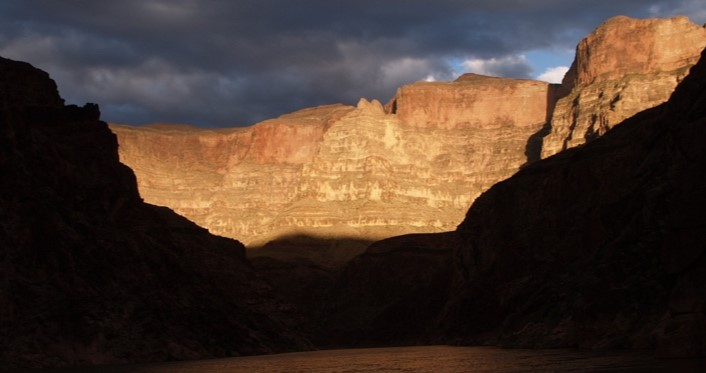
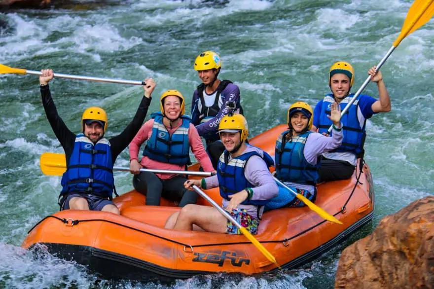
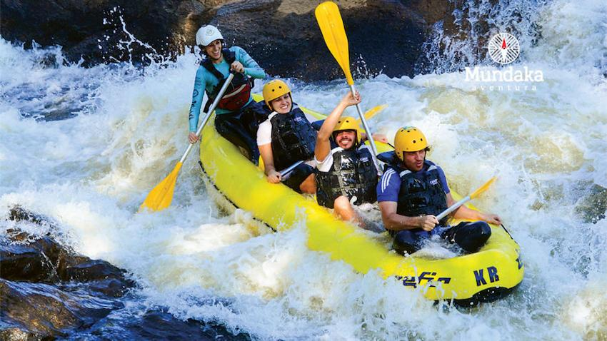
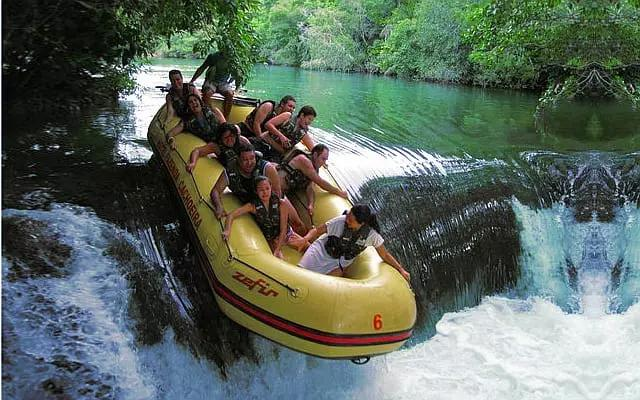
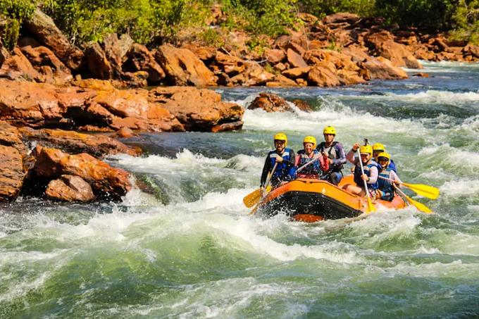

Most Popular Waterland Rafting Trips

Find a trip🔽Most popular trips🔽

This river runs between Alaska and the Canadian border, which already tells us the type of climate we are going to face: very cold and with completely white waters. The main attraction of this section is the formation of glaciers and icebergs, added to a spectacular landscape full of mountains. It is a wild territory where you will see brown bears and moose.

This is a rafting trip on the Magpie River (Magpie in Spanish) that begins at the lake of the same name, which is accessed by seaplane. From here the intensity of the route will continue to grow in intensity and difficulty, until it reaches level V rapids, in the area of the falls. The experience is offered in an 8-day journey through one of the least known areas of the Canadian province of Quebec.

Known for being one of the most popular whitewater rafting trips in the world, the Salmon River has rapids up to level IV. It runs through a series of inhospitable areas, between forests and deserts, where we can spot bears, which becomes one of the greatest attractions of this river.

As this is a rafting trip in a tropical climate, the conditions are milder, although it is a demanding rafting trip. Calm sections will alternate with level IV rapids. The best known area of this river is the Namangosa Ravine, where the highest level rapids occur and where we will observe the spectacular waterfalls offered by the surrounding landscape.
The best 10 trips available until December.
| Trips | Description |
|---|---|
| Middle Fork of the Salmon River | the “Middle Fork” is the best river trip in the world due to its 100 miles of continuous Class III and IV whitewater, clean water, great camps, world class fishing, hot springs, and abundant wildlife. It ends in the famously beautiful Impassable Canyon that is unlike any other in the world. Typically done in 6 days (perfect!), this is a river trip that brings groups together like no other. |
| Illinois River | The magical Illinois River flows through the northern end of Oregon’s Kalmiopsis Wilderness, an area known for uniquely wild rivers and emerald green water. There really is something special about this river and surrounding wilderness that cannot be described in words. Unfortunately the flows are erratic and the rapids challenging making it difficult to access. |
| Colorado River | The Colorado River through the Grand Canyon is special because you float through one of the seven wonders of the world and trips can be as long as 25 days! This is a big water river with pushy rapids and long pools in between. This is definitely the best river trip for side hikes. |
| Futaleufu River | Patagonia’s Futaleufu (Foo-Two-Lay-Foo) River is well known for it’s huge rapids and turquoise blue water. The mountain scenery is stunning and the traveling through Chile is simply wonderful. This is the best trip for big rapids. |
| Tuolumne River | The Tuolumne River (or just the “T”) has a special place in my heart, so it was hard to not rank it #1. The Main Tuolumne sets the standard for Class IV and the Upper Tuolumne (aka Cherry Creek) sets the standard for Class V. Theses sections of the “T” cascade through a deep canyon in the Sierra Nevada Mountains just outside of Yosemite National Park. |
| Magpie River | A trip on the Magpie starts by flying onto a wilderness lake via float plane. Like other legendary trips, the Magpie offers great rapids, side hikes, wildlife, and adds an opportunity to catch a glimpse of the mystical aurora borealis. The highlight is the last night camp where Magpie Falls plunges off an 80 foot plateau directly across the river. |
| Rogue River | The Wild Rogue River is the classic American West river trip and it’s the perfect trip for first timers. It has great Class II and III rapids and warm water in a thickly forested canyon. This is the best river trip for families and for viewing wildlife. |
| Franklin River | The Franklin River famously runs through the rugged wilderness of Tasmania. This remote expedition includes many portages and the added challenge of rapidly changing water levels. You’ll enjoy big rapids, deep gorges, and beautiful camps sites. |
| Selway River | The Selway is a remote trip on a beautiful Class IV river in Northern Idaho. Only one trip is allowed to launch each day making it hard to get on this gem. |
| Tatsenshini and Alsek Rivers | These parallel rivers flow through some of the most remote regions in the U.S. and Canada. The whitewater is fairly easy (unless you run Turnback Canyon on the Upper Alsek) but the grizzly bears, cold water, and remoteness will present plenty of challenges. You can start on the Tatshenshini River and meet the larger Alsek River or run the Upper Alsek. Both trips end where the Alsek runs into the Pacific Ocean |